概要
※定番シリーズと互換性があります。
※フォントが美しく表示されます。
※ゲーム起動にDVD不要となります。
※他のツールやエディタも問題なく導入可能となります。
30周年DVD版の天翔記のインストール
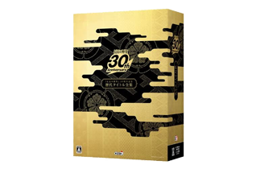
デフォルトの場所(Program Files(x86)以下のフォルダなど)は特別な場所なので、ここには天翔記をインストールしないこと。
C:\game\koei\Tenshoukiなど、通常のディレクトリにインストールする。
インストールしたフォルダ、もしくはそのサブフォルダに「NOBU6PK.exe」や「N6Launcher.exe」などのファイルがあります。
ここを「天翔記ディレクトリ」もしくは「天翔記フォルダ」と呼ぶこととします。
ファイル等は、以後、このフォルダにコピーしていくこととなります。
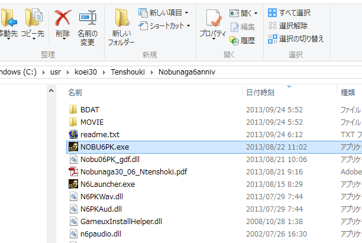
神パッチを入れる
神パッチのサイトの一番上から、2005/04/12版をダウンロードします。
(Permission Error などでダウンロードできない場合、
n6p+zip のzipファイルの中に、
「20040512.zip」が含まれています。これが 2005/04/12版 と同一ファイルですので、そちらで代用してください)
ファイル(20040512.zip)を解凍し、全てのファイルを、上述した「天翔記フォルダ」にコピーします。
もしも、
readme.txtを上書きしますか？ と聞かれた場合は、上書きしてもしなくてもどちらでもＯＫです。
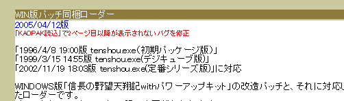
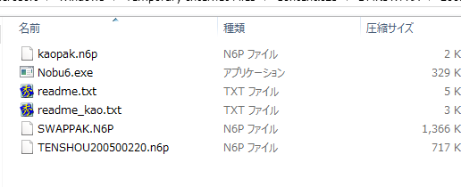
金パッチを導入
金パッチアップデータ をダウンロードし、
ファイルを解凍し、全てのファイルを、上述した「天翔記フォルダ」にコピーします。
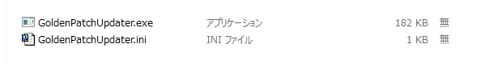
コピーした先の「天翔記フォルダ」で、GoldenPatchUpdater.exeを実行してみましょう。
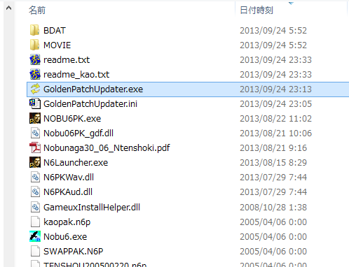
以下のような画面となりますので、しばらく待った後「更新」ボタンを押して、各種拡張ファイルをダウンロードします。
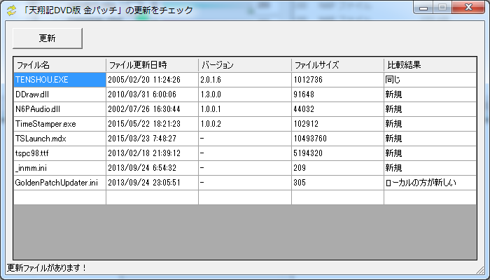
天翔 PC98フォントのインストール
「天翔記フォルダ」の中に、tspc98.ttf という「フォントファイル」があります。
このフォントは天翔記を非常に見栄えよく見ることが出来るフォントとなります。
このファイルをC:\Windows\Fontsにコピーしてください。
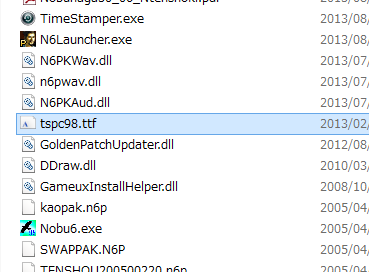
別のインストールの方法としては、tspc98.ttf をダブルクリックすると、フォントの内容が閲覧でき、
インストールボタンがあり、それでもインストール可能です。
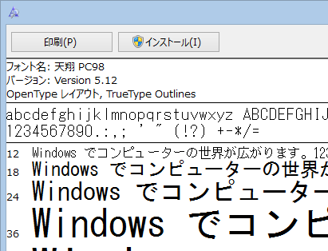
デスクトップへのショートカットの作成
「天翔記フォルダ」の中の tenshou.exe を右クリックして、デスクトップにショートカットを作りましょう。
(別に作らなくてもよいのですが、以降楽なので)
同様に、 TSLaunch.mdx を右クリックして、デスクトップにショートカットを作りましょう。
(別に作らなくてもよいのですが、以降楽なので)
このTSLaunch.mdxはダミーのCD-ROMとなります。
中身はアイコンや無音しかなく、ほぼ空です。
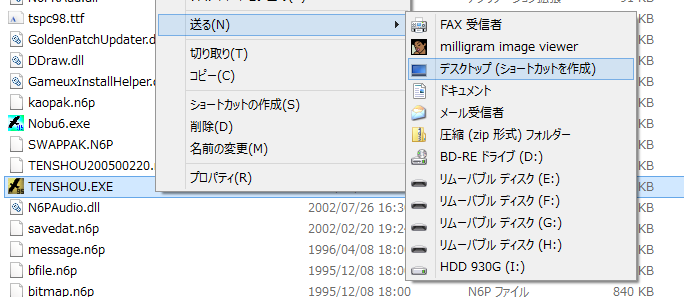
天翔記起動の確認
一度 tenshou.exe が立ち上がるか確認しましょう。
先ほど、デスクトップに作った「TENSHOU.EXE ショートカット」から起動してみましょう。
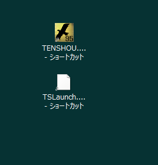
ゲーム中のBGMは鳴りませんが、ムービーが再生され、ゲームも問題なくプレイできるはずです。
起動確認ができたので、今起動した天翔記を終了します。
DaemonTools Liteの導入。
(「DaemonTools Lite」ではなく「Alcohol 52% Free Edition」でもOKです）
すでに「DaemonTools Lite」もしくは「Alcohol 52% Free Edition」をインストール済みの人は、
ここはパスして次の「_inmmの導入」にいってください。
Daemon Tools Lite をインストールします。
DaemonTools Lite は「仮想CD/仮想CDドライブ」を実現する最も有名なツールです。
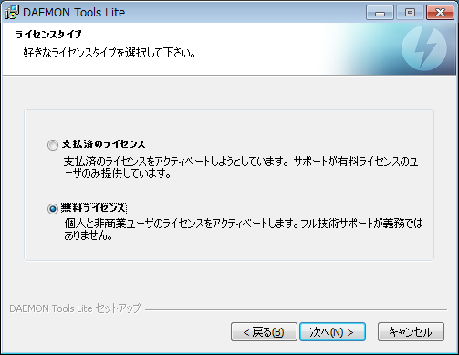
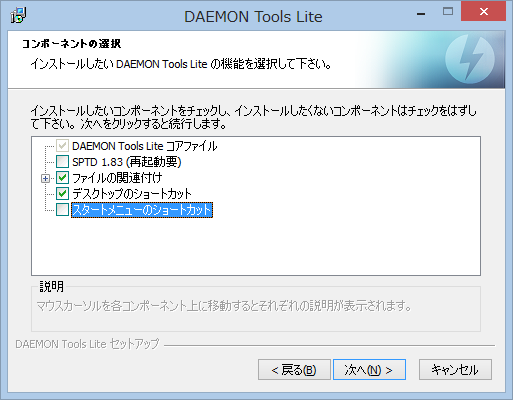
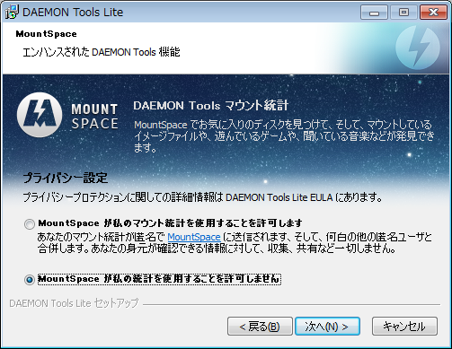
「広告ウェアの類」を入れようとしてくるので、「どうすればインストールを避けられるのか？」を考える必要がある。
下記のように「一種の引っかけ」のようになっているものもあるので、注意。
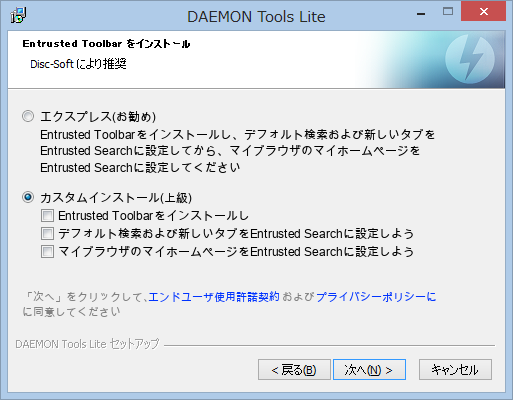
「広告ウェアの類」を入れようとしてくるので、とにかく「DaemonToolsと関係ないものはいらない。インストールしない」
という趣旨のものを徹底して選ぼう。
「決して適当に全てＯＫなど押さないこと。」
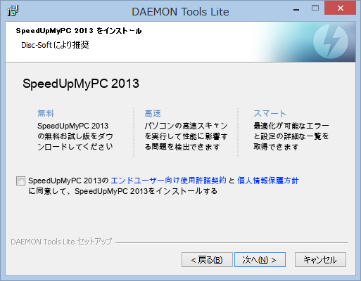
DaemonTools Liteはどこにインストールしてもかまいません、好きな場所にインストールしましょう。
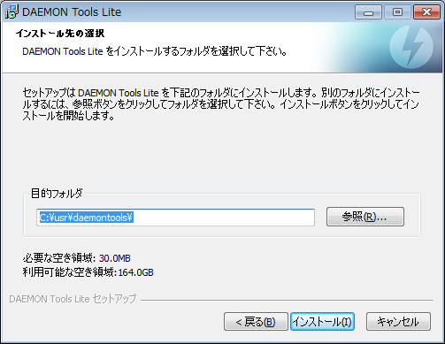
_inmmの導入。
_inmmサイトから_inmm をインストールします。
「ダウンロード _inmm.dll Ver. 2.38 (287KB) 2006/04/08」と記載されているものがダウンロード対象です。
すでにインストール済みの人は、インストールはパスし、次の「_inmmの設定」からしてください。
_inmmはCDドライブの「トラック音楽」からの再生を、ハードディスク内にある音楽ファイルで代用する機能を果たすものです。
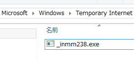

_inmmはどこにインストールしてもかまいません、好きな場所にインストールしましょう。
ただし、わかりやすい場所にインストールするのが良いでしょう。
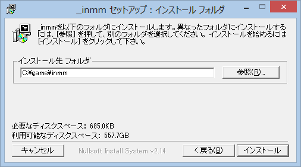
_inmmの設定。
_inmmセットアップ(_inmmcnf.exe)を起動します。
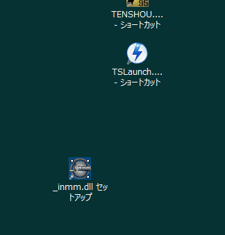
次の下の「図２」のように、
「*.dat」 という拡張子を追加して、「DirectShow」を選択します。
また、「その他のファイル」も、「DirectShow」を選択します。
(「その他のファイル」については、すでに_inmmを導入している人はお好みで)
図１
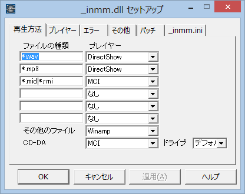
図２
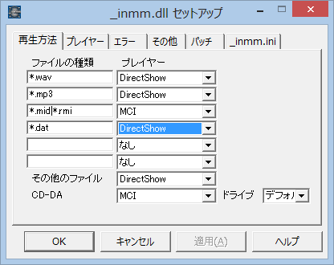
最後に「適用」ボタンを押して反映させてください!!
タイムスタンプの矯正
「天翔記フォルダ」にある TimeStamper.exe を実行します。
(特に反応はないですが、解凍行為などで、タイムスタンプが変更されてしまった場合、
これによって神パッチ用のタイムスタンプに修正されます。）
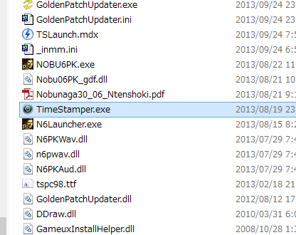
神パッチ起動
- 「天翔記フォルダ」内に、nobu6.exe というファイルがあります。
これが「神パッチ」と言われる実行ファイルとなります。
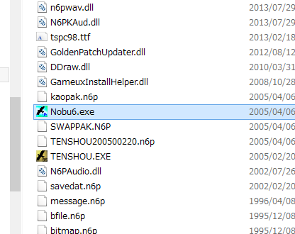
- 起動すると、以下のような画面になるので、「設定の読み込み」ボタンを押します。
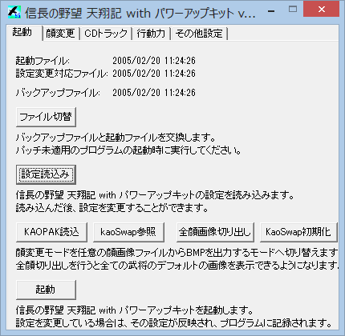
- 次に「CDトラック」のタブで「デフォルト」ボタンを押しましょう。
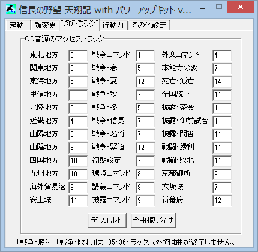
- 「その他」のタブで「_inmm.dll」を「適用」にチェックを入れます。
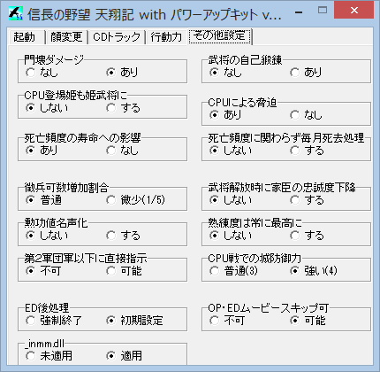
- 最後に「起動」のタブに戻り、下の「起動」ボタンを押します。
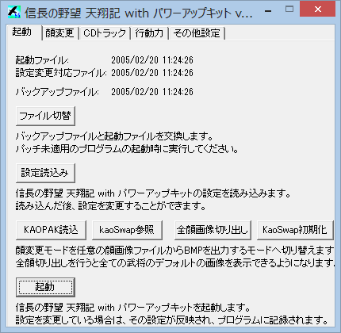
「起動」ボタンとなっていますが、神パッチは起動することで、設定が反映されるという独特な挙動となっています。
天翔記が起動しました。設定が反映されました。
すぐに天翔記を終了させましょう。
マウント
「天翔記フォルダ(もしくはデスクトップのショートカット)」にある、TSLaunch.mdx をダブルクリックして、DaemonToolsに認識させます。
この行為は、CD-ROMを入れる操作に相当します。
この行為をしなかった場合は、起動は可能ですが、BGMは鳴りません。
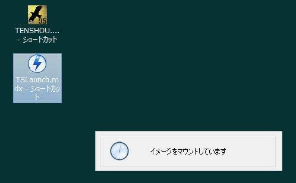
天翔記起動
tenshou.exe(もしくはデスクトップのショートカット) をダブルクリックして起動します。
天翔記のゲームが立ち上がります。
ちゃんとBGMも鳴ることでしょう。
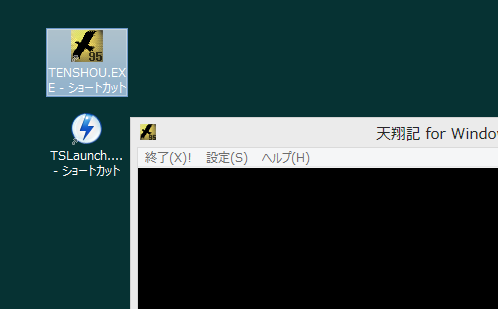
補足
なお、DVDメディアの天翔記はPCのドライブに入れておく必要はありません
再インストールやアンインストールに必要となりますので、大事にしまっておいてください。